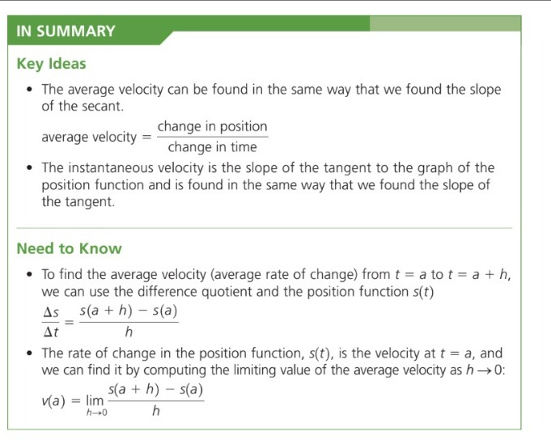

That's a Wrap!

Success Criteria
I CAN...
- Identify the sign of the slope graphically.
- Correctly recall and use the slope formula.
- Explain the definition of a derivative using the limit function.
- Use the limit function to find the derivative of the function.
- Solve the average and instantaneous velocity of an object.
- Explain the difference between average and instantaneous rates of change.